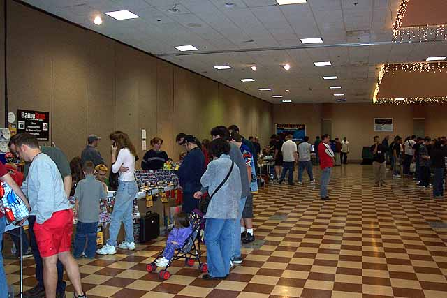

Demo's, displays and so much more.... with over 3 dozen vendors and
exhibitors everyone had something
to play, try out, buy and trade. Attendee's
ranged from the 30+ crowd to many young kids who
seemed equally biten by the Classic Gaming excitement.
My main man Cassidy and his gorgeous Nutting Associated 2 player Computer
Space.... he looks like
a proud father and his first born! :-) Cassidy had
for sale the rare unreleased Atari Polo game
by Carol Shaw.... he had them done up in great looking reproduction
boxes.

The 22' wide aisles provided plenty of room for attendee's to stop and
gather aound the tables on both
sides and allow plenty of free movement for people walking from one
side of the floor to another, this
was a pleasant feature with 1,000 attendee's filling the show floor.
A HUGE plus over last years
show which was 1/6th the size of this years show and was jammed to
the gills with its 400 attendees!

This joystick definitely earned its name, it was very Slik indeed!
Everything a gamer could want to play
PC games. It is rather huge though, so make sure you've
got a dedicated space for this beautiful beastie.